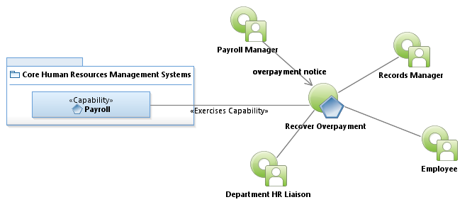
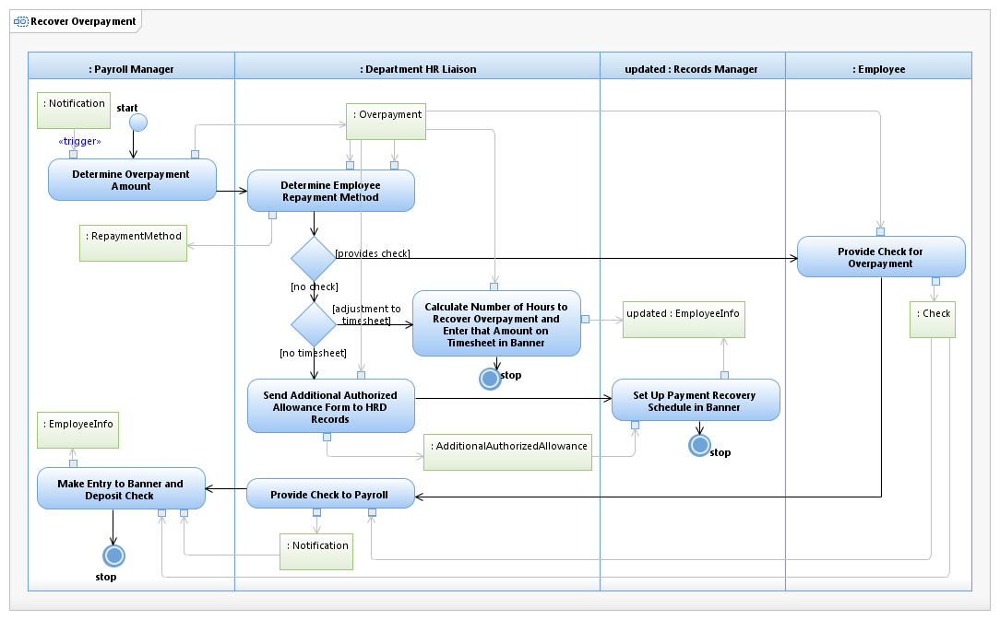

Use Case Model: Recover Overpayment
Architect: Aaron Brown, IT Enterprise Architect Senior
Date Last Modified: 11/13/2012
User Review: Ingrid Whitley, Payroll Manager
Date: 11/13/2012
Recover funds that have been over paid to employees. Note: When an over payment is reported for a previous calendar year, a 941X form is completed, signed and sent to the IRS to reflect updated taxable wages and tax liability.
Follow link to Role Definitions

Use Case Model: Recover Overpayment

Activity Model: Recover Overpayment